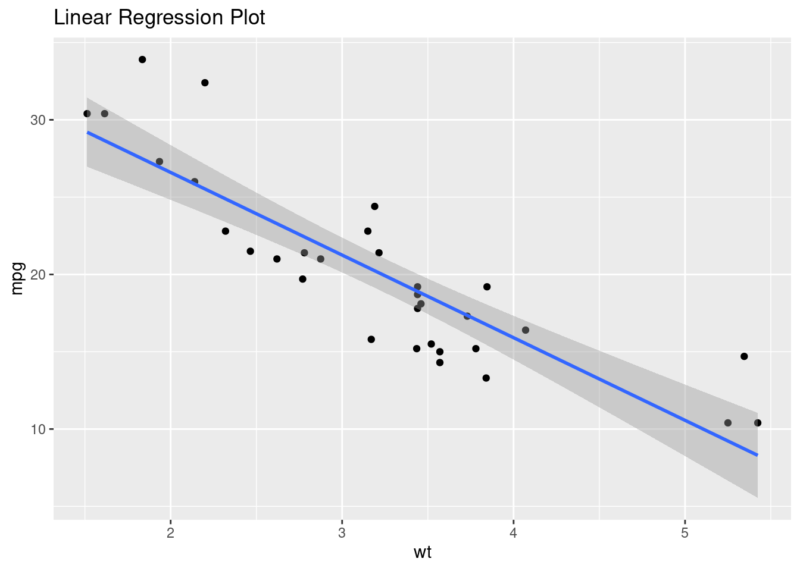

In this post I will write about the statistics and metrics of linear regression for you to finally understand all of the output from summary() R function applied to an lm() object, in a very practical way.
Disclaimer: I am NOT a statistician, so to all statisticians out there, I apologize for any misused term. My intention here is just to let people interpret their own regression models and understand what is going on with their data in a practical way.
About linear regression
There are two main uses of linear regression: statistical inference and prediction.
In the statistical inference line, a linear regression is performed to find a relationship of a dependent continuous variable and one or more variables of any type (continuous or categorical). You can, then, explain a relationship between variables.
As a predictive point of view, regression is a part of supervised learning, a type of machine learning, and can be used to predict new data based on the relationship found between two variables.
These two approaches are not mutually exclusive, they can be used together. You can both explain the relationship between variables and use your model to predict with new data input.
Concerning the prior assumptions to perform a linear model, such as linearity and normality of the variables, mainly, this is a very discussed topic among statisticians and data scientists. In the machine learning side, the assumptions do not matter that much if the model has a good application in predicting the variable of interest. And for the inference side, the assumptions are more important for the model inference to be correct, but they are not written in stone. For example, not normally distributed variables might work well in a t-test or linear regression for a large sample size. At the same time, to perform linear regressions on gene expression data from RNA-seq, there are several transformations made in the data so it can be normal, linear, and homoskedastic.
As I said, it is a very much discussed topic and I suggest that you read more about your area of application to decide if you should check for assumptions or not. I won’t dive into assumptions in this post.
Running the linear regression
First of all, we need an analysis.
We’ll use the most classic dataset of R: mtcars. It contains measures as weight, miles per gallon, number of cylinders, etc, of 32 models of cars from 1974. You can explore the dataset more by typing ?mtcars in your R console.
Let’s check the variables distribution overall:
summary(mtcars)
mpg cyl disp hp
Min. :10.40 Min. :4.000 Min. : 71.1 Min. : 52.0
1st Qu.:15.43 1st Qu.:4.000 1st Qu.:120.8 1st Qu.: 96.5
Median :19.20 Median :6.000 Median :196.3 Median :123.0
Mean :20.09 Mean :6.188 Mean :230.7 Mean :146.7
3rd Qu.:22.80 3rd Qu.:8.000 3rd Qu.:326.0 3rd Qu.:180.0
Max. :33.90 Max. :8.000 Max. :472.0 Max. :335.0
drat wt qsec vs
Min. :2.760 Min. :1.513 Min. :14.50 Min. :0.0000
1st Qu.:3.080 1st Qu.:2.581 1st Qu.:16.89 1st Qu.:0.0000
Median :3.695 Median :3.325 Median :17.71 Median :0.0000
Mean :3.597 Mean :3.217 Mean :17.85 Mean :0.4375
3rd Qu.:3.920 3rd Qu.:3.610 3rd Qu.:18.90 3rd Qu.:1.0000
Max. :4.930 Max. :5.424 Max. :22.90 Max. :1.0000
am gear carb
Min. :0.0000 Min. :3.000 Min. :1.000
1st Qu.:0.0000 1st Qu.:3.000 1st Qu.:2.000
Median :0.0000 Median :4.000 Median :2.000
Mean :0.4062 Mean :3.688 Mean :2.812
3rd Qu.:1.0000 3rd Qu.:4.000 3rd Qu.:4.000
Max. :1.0000 Max. :5.000 Max. :8.000
They are all numeric, but am and vs seem to be binary, and some seem to be categorical, as carb and cyl.
In our analysis to demonstrate the linear regression metrics and statistics, our question will be:
Does the weight of a car influences in how many miles it can go per gallon of gas?
To answer that, we will use the predictor (independent variable) weight or wt and the predicted (dependent variable) miles per gallon or mpg.
Let’s fit the model:
fit <-lm(mpg ~ wt, mtcars)
To obtain all statistics and some of the metrics for our model, we need to use the function summary() in R.
summary(fit)
Call:
lm(formula = mpg ~ wt, data = mtcars)
Residuals:
Min 1Q Median 3Q Max
-4.5432 -2.3647 -0.1252 1.4096 6.8727
Coefficients:
Estimate Std. Error t value Pr(>|t|)
(Intercept) 37.2851 1.8776 19.858 < 2e-16 ***
wt -5.3445 0.5591 -9.559 1.29e-10 ***
---
Signif. codes: 0 '***' 0.001 '**' 0.01 '*' 0.05 '.' 0.1 ' ' 1
Residual standard error: 3.046 on 30 degrees of freedom
Multiple R-squared: 0.7528, Adjusted R-squared: 0.7446
F-statistic: 91.38 on 1 and 30 DF, p-value: 1.294e-10
Okay, so we have this ocean of information and how can we answer our question? p value is low, and all three stars for coefficients, this seems nice.
Let’s see one by one, by order of appearance in the output of summary(fit).
Metrics and statistics
While metrics are the values to measure performance of the overall model, statistics are the coefficients of hypothesis tests and estimates of each variable. Below they will be explained.
To visualize some parts of the explanation, the linear regression plot will be illustrated below.

1. Residuals
# Residuals:# Min 1Q Median 3Q Max # -4.5432 -2.3647 -0.1252 1.4096 6.8727
“Residual” was a term invented because an executive of a drug industry didn’t want to admit having “error” in their data when sending it to FDA (you can find this info on page 239 of the book The Lady Tasting Tea). So yes, these are the “errors” of your model. Not that there is something wrong, but the fitted line is not perfect, there are deviations from it to your real data because other factors and randomness affect your predicted variable (mpg) too. Those deviations are the residuals.
They are calculated subtracting the predicted data from the observed data. In our case, predicted (obtained using the model) miles per gallon minus observed (from mtcars) miles per gallon.
To see all of them, instead of a summary, run:
resid(fit)
Mazda RX4 Mazda RX4 Wag Datsun 710 Hornet 4 Drive
-2.2826106 -0.9197704 -2.0859521 1.2973499
Hornet Sportabout Valiant Duster 360 Merc 240D
-0.2001440 -0.6932545 -3.9053627 4.1637381
Merc 230 Merc 280 Merc 280C Merc 450SE
2.3499593 0.2998560 -1.1001440 0.8668731
Merc 450SL Merc 450SLC Cadillac Fleetwood Lincoln Continental
-0.0502472 -1.8830236 1.1733496 2.1032876
Chrysler Imperial Fiat 128 Honda Civic Toyota Corolla
5.9810744 6.8727113 1.7461954 6.4219792
Toyota Corona Dodge Challenger AMC Javelin Camaro Z28
-2.6110037 -2.9725862 -3.7268663 -3.4623553
Pontiac Firebird Fiat X1-9 Porsche 914-2 Lotus Europa
2.4643670 0.3564263 0.1520430 1.2010593
Ford Pantera L Ferrari Dino Maserati Bora Volvo 142E
-4.5431513 -2.7809399 -3.2053627 -1.0274952
It is possible to explore the residuals checking them for some assumptions of a linear regression, and hidden patterns in the data. This is a very long topic, so it will be left to another post.
2. Coefficients
Overall, the coefficients contain information about the predictors of your dependent variable. Below you can see a detailed explanation.
Intercept is the mean value of y when x is 0 in our model. In our example, how many miles a gallon would make in average for a car with zero lbs. Also represented as β0 in the linear regression equation:
y = β0 + β1x + ε
In our example it makes no sense at all. There is no car with 0 lbs. Therefore we can just ignore it and interpret the coefficient of interest, β1.
b. wt
Represented by the variable name, this is the angular coefficient, β1. It represents the slope of the line in the linear regression plot. This is how much y increases or decreases with the increase of one unit of x. In our example, it is how many miles per gallondecreases (estimate is negative = -5.3) with the increase of each 1000 lb weight (unit of measure of wt) of the car.
The columns for the coefficients are:
I. Estimate
Estimates are the values per se of β0 (Intercept) and β1 (wt). The explanation of them is above.
II. Std Error
Standard Error is the deviation of the estimate from its real value. The smallest this value is, more precise the estimate is. It tends to be smaller if you have a big number of observations, since it is the standard deviation divided by n.
III. t value
This is the value of t in the Student’s t test for one sample. The alternative hypothesis tested is: is your estimate different than zero?, which relies on the distribution of your data being a t distribution, which is very close to a normal distribution. It is calculated by Estimate/Std Error.
IV. Pr(>|t|)
This is the p value for the t test applied to your estimate. If it is less than the considered alpha - the error you choose to accept (generally 0.05) - then you can say your estimates are very likely to be significant.
3. Signif. codes
This is just a legend for what the asterisks and dot mean concerning level of significance for the p values.
4. Degrees of freedom
# 30 degrees of freedom
Degrees of freedom (DF) are how many units of your data are “free to vary”.
Practically, this is how many observations you have minus the number of estimated parameters used in your model (in this case, intercept and weight). Which means that it is directly proportional to the number of samples, and inversely proportional to the number of parameters and variables in your analysis. Degrees of freedom are crucial to determine your t distribution shape and what will be the significance (p value) of the estimates.
5. Residual standard error
# Residual standard error: 3.046
Residual standard error (RSE) is the average deviation of predicted values (from the model) from observed values (the ones in your dataset).
It can be calculated with:
y <- mtcars$mpgy_hat <-predict(fit)df <-30# degrees of freedomsqrt(sum((y - y_hat)^2)/df)
[1] 3.045882
Statistically speaking, it is the estimate of standard deviation of predicted values from real values; a measure of variation around the regression line.
Confidence intervals around predicted values are generated using the RSE, therefore it is an important metric of your model. Large RSE can generate inaccurate predictions.
6. Multiple R-squared
# Multiple R-squared: 0.7528
This is the famous R squared (R²). The proportion of variance of your dependent variable, y, which is explained by your model. Simplifying: proportion of variance explained.
Since it is a proportion, its value is between 0 and 1.
Our model explains 75% of variance in miles per gallon.
This does not mean that if you have an R² = 0.3 for example you have a poor regression analysis. Some variables are just partly explained by the predictor analyzed, and if your intention is to interpret the influence of a predictor in a response variable, it may be useful even with a low variance explained. This happens in genomics, with polygenic scores for example, when your analyzed genetics explains only a part of a trait or disease, while the rest is explained by other factors such as environment.
Also, this is not the best way to analyze if your model is good or not. RMSE (Root Mean Squared Error), which is just squaring residuals, averaging them, and getting the square root, is generally a better way to evaluate whether you have a less prone to errors model. The smallest the RMSE, the better your model is.
RMSE <-sqrt(mean(resid(fit)^2))RMSE
[1] 2.949163
That means that in average there is an error of 2.9 miles per gallon in our model.
Have in mind what my boss always repeats: “All models are wrong, but some are useful”, a classical phrase by George Box.
7. Adjusted R-Squared
# Adjusted R-squared: 0.7446
When there is more than one predictor in your linear regression (multiple linear regression), there is always an increase in R² independent of increase in variance explained, due to just the addittion of a new predictor. Therefore the R² value is adjusted for that.
To compare multiple linear regression models, or models with different number of predictors, it is recommended to check adjusted R-squared instead of multiple R-squared for variance explained.
8. F-statistic
# F-statistic: 91.38 on 1 and 30 DF
F is the statistic from the F-test performed in your model. Basically the F value is used to see if there is any relationship between the response and predictors in a multiple linear regression. In the example discussed here, a simple linear regression, the estimate β1 = 0 is a better way to tell that there is no relationship between the response and predictor.
9. p-value
# p-value: 1.294e-10
This is the F-test p-value, which tells you if your F-test is significant. A p-value below the alpha you choose (for example, 0.05) means there is a high chance that at least one of your predictors is significantly associated with your dependent variable. It is more used for multiple regression models, which can be approached in another blog post.
Interpretation concerns
Some transformations can be used in the linear regression to make your model more interpretable.
For example, let’s say that, as me, you are not from a country that uses lbs as a weight metric, neither miles for a distance one, or gallons for a volume one.
Instead, you would like to interpret your model using kilograms, kilometers, and liters. Is this possible?
Yes!
Using the I() operator around the terms of the linear regression, just so you can transform from inside of the lm() function, we can transform the terms and get the proper interpretation. See below:
Call:
lm(formula = I(mpg * miles_to_kilometers/gallons_to_liters) ~
I(wt * lb_to_kg), data = mtcars)
Residuals:
Min 1Q Median 3Q Max
-1.92994 -1.00453 -0.05318 0.59878 2.91954
Coefficients:
Estimate Std. Error t value Pr(>|t|)
(Intercept) 15.8388 0.7976 19.858 < 2e-16 ***
I(wt * lb_to_kg) -5.0452 0.5278 -9.559 1.29e-10 ***
---
Signif. codes: 0 '***' 0.001 '**' 0.01 '*' 0.05 '.' 0.1 ' ' 1
Residual standard error: 1.294 on 30 degrees of freedom
Multiple R-squared: 0.7528, Adjusted R-squared: 0.7446
F-statistic: 91.38 on 1 and 30 DF, p-value: 1.294e-10
The interpretation is:
There is a reduction of 5 kilometers per liter for each 1000kg increase in the car weight.
Much better now, right?
;)
Closing remarks
I hope you have liked this post, and that it has shed light on you about how to interpret the regression models outputs from R.
I really missed this content when I was applying linear regression in R, so I really hope it helps you as much as it would have helped me when I was looking for it!